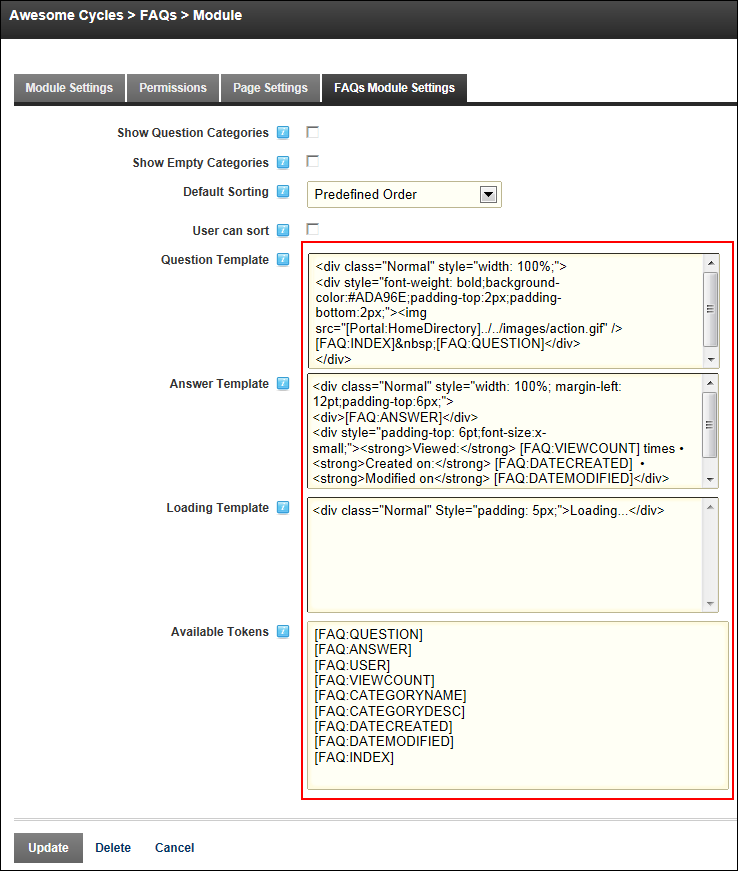
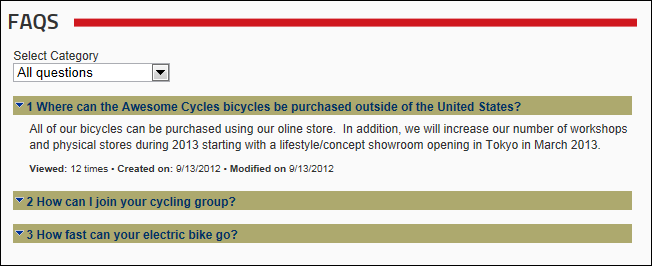

How to edit the templates which control the layout of FAQ's in the FAQs module. A template is provided for the answer, the question, as well as a loading template to be display while AJAX is loading the question. Nine different tokens can be added to these templates to display information such as the related category, the date the FAQ was created, number of times an item has been viewed, etc. A full list of tokens is listed below this topic and on the Settings page.

Note: In the below image, the Question Template has been modified to include the FAQ Index before the question and the background color of questions has been changed.

Tip: To restore an original template, add a new module and copy and paste the template from the new module into the module you have edited.
| [FAQ:QUESTION] |
Displays the information entered into the question field. |
| [FAQ:ANSWER] |
Displays the information entered into the answer field. |
| [FAQ:USER] |
Displays the first name last name of the user who last updated the FAQ. This token can only be added into the Answer template. |
| [FAQ:VIEWCOUNT] |
Displays the number times the item has been viewed. |
| [FAQ:CATEGORYNAME] |
Displays the information entered into the Category Name field. |
| [FAQ:CATEGORYDESC] |
Displays the information entered into the Category Description field. |
|
[FAQ:DATECREATED] |
Displays the date when the FAQ was created. |
| [FAQ:DATEMODIFIED] |
Displays the date when the FAQ was last modified. |
| [FAQ:INDEX] |
Displays the order number of the FAQ. |